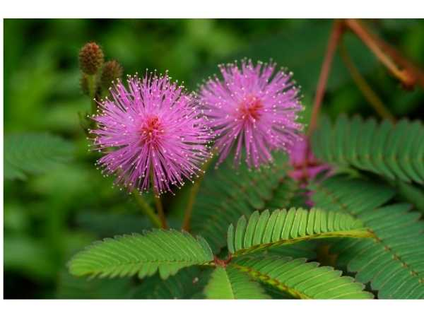

Mimosa pudica
Common Names: Touch Me Not, Sensitive Plant, Shame Plant, Sleeping Grass, Humble Plant
Local Name: Thottavadi (Tamil), Lajwanti (Hindi), Lajja Boti (Bengali)
Family: Fabaceae (Mimosaceae)
Origin: Tropical South and Central America; naturalized pantropically
Plant Type: Perennial herb or subshrub; often grown as annual
Variety: Species type; known for thigmonastic leaf movement
Average Lifespan: 1–2 years; self-seeds freely
| Growth Habit | Spreading subshrub or herb; stems armed with recurved prickles; semi-prostrate to erect |
| Plant Size | 30–100 cm tall; spreading 60–90 cm wide |
| Leaves | Bipinnately compound; 4 pinnae each with 10–26 pairs of leaflets; fold inward when touched (thigmonasty) |
| Flowers | Pink to lavender fluffy globose flower heads, 1–2 cm diameter; borne on axillary stalks |
| Flower Characteristics | Numerous stamens give fluffy pom-pom appearance; mildly fragrant; blooms throughout warm season |
| Fruit | Flat bristly pods, 1–2 cm long; cluster of 2–5 pods; break into segments at maturity |
| Seed Characteristics | Small, oval, brown seeds; 2–3 mm; hard seed coat; long viability |
| Root System | Taproot with nitrogen-fixing nodules; moderately deep |
| Climate | Tropical and subtropical; thrives in warm, humid conditions |
| Temperature Range | 18–35°C; frost-sensitive |
| Rainfall Requirement | 600–1500 mm; tolerates both moist and dry conditions |
| Soil Type | Tolerates poor, sandy, or clay soils; prefers well-drained loam |
| Soil pH Preference | 5.5–7.5 |
| Sun Requirement | Full sun to partial shade |
| Spacing | 30–50 cm apart |
| Irrigation Method | Regular watering; tolerates brief drought |
| Water Requirement | Low to moderate |
| Can it Grow in Pots? | Yes, excellent in small to medium pots; popular as a novelty houseplant |
| Fertilizer Schedule | Monthly; low-nitrogen fertilizer; fixes own nitrogen |
| Recommended Organic Fertilizers | Compost, vermicompost; minimal feeding needed |
| Pesticide Frequency | Rarely needed |
| Recommended Organic Pesticides | Neem oil for spider mites; insecticidal soap for aphids |
| Mulching Practice | Light mulch to retain moisture |
| Training System | No training needed; grows as ground cover or border plant |
| Pruning Time | Trim back leggy growth as needed |
| How to Prune | Cut back by half to encourage bushy growth; wear gloves due to prickles |
| Common Pests | Spider mites, aphids (occasional) |
| Common Diseases | Root rot in waterlogged soils; generally disease-resistant |
| Disease Prevention & Remedies | Ensure good drainage; avoid overwatering |
| Flowering Months | Year-round in tropics; peak May–September |
| Pollination Type | Insect-pollinated (bees, butterflies) |
| Pollination Notes | Self-seeds prolifically; can become invasive in some regions |
| Pollination Details | Bee and butterfly pollinated; self-fertile |
| Propagation by Seeds | Scarify or soak seeds in warm water 24 hours; direct sow; germinates in 7–14 days |
| Propagation by Cuttings | Stem cuttings possible but seeds are easier |
| Propagation by Grafting | Not applicable |
| Water Usage | Low; drought-tolerant |
| Soil Conservation Practices | Nitrogen-fixing; improves soil fertility; used as green manure |
| Organic Practices Used | Minimal inputs; natural nitrogen fixer |
| Companion Plants | Used as ground cover; nitrogen enriches soil for neighboring plants |
| Biodiversity Benefits | Attracts bees and butterflies; supports soil microbiome through nitrogen fixation |
| Symbolism | Symbol of modesty and sensitivity; "Lajwanti" means "shy one" in Hindi |
| Traditional Uses | Widely used in Ayurveda and Siddha medicine; roots, leaves, and seeds used medicinally |
| Anxiety & Sleep | Root decoction used traditionally as a mild sedative and for insomnia |
| Anti-inflammatory Properties | Leaf paste applied to wounds and inflammations in traditional medicine |
| Digestive Health | Used for diarrhea and dysentery in traditional Ayurvedic practice |
Disclaimer: Information provided is for educational purposes only and not a substitute for medical advice.
Add your field observations here.